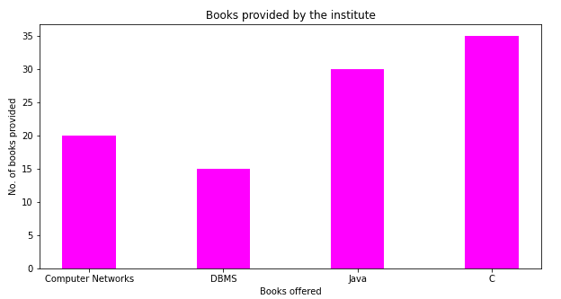
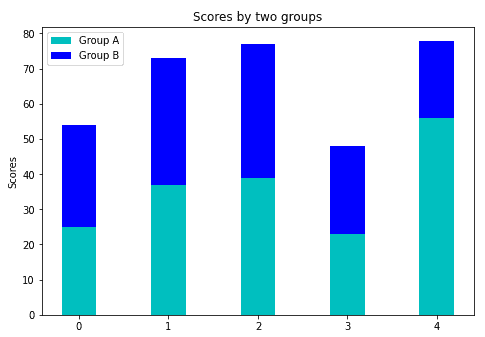

Matplotlib 条形图bar()函数
原文：https://www.studytonight.com/matplotlib/matplotlib-bar-plot-bar-function
在本教程中，我们将介绍 Matplotlib 中的条形图以及如何创建它。
条形图或条形图通常是一种图形/图表，主要用于用矩形条表示数据类别，矩形条的长度和高度与其所代表的值成比例。
- 您可以垂直或水平绘制这些条形。
* 我们使用条形图主要显示离散类别数据之间的比较。
* 在柱状图中，图的一个轴用于表示**被比较的特定类别**，而另一个轴通常表示与那些类别对应的**测量值。****
**## Matplotlib bar()函数
bar()功能用于创建条形图，该条形图以矩形为边界，具体取决于该功能的给定参数。在 Matplotlib API 中，这个函数可以在 MATLAB 风格中使用，以及作为面向对象 API 。
Matplotlib bar()函数语法
将该函数用于轴对象所需的语法如下:
ax.bar(x, height, width, bottom, align)
该功能的参数描述如下:
x
该参数用于表示标量值的序列，该序列表示条的x 坐标。
align参数控制x 是条中心(默认)还是左边缘**高度
该参数是标量或标量值序列，代表构成 y 轴值的条的高度。
宽度
该参数为标量或类数组，可选。该参数的默认值为 0.8**
* 底部**
这也是一个**标量或者类似数组的**，并且是**可选的**。默认值为**无**。
* **对齐**
该参数取值为{' **中心**'、'**边缘** '}、**可选**，该参数默认值为'**中心****
bar()函数返回一个包含所有条的 Matplotlib 容器对象**。
现在是时候深入研究这个概念的一些例子了。
简单条形图:
下面给出了一个简单的条形图示例，它代表了研究所提供的书籍数量:
import numpy as np
import matplotlib.pyplot as plt
data = {'Computer Networks':20, 'DBMS':15, 'Java':30,'C':35}
courses = list(data.keys())
values = list(data.values())
fig = plt.figure(figsize = (10, 5))
plt.bar(courses, values, color ='magenta',width = 0.4)
plt.xlabel("Books offered")
plt.ylabel("No. of books provided")
plt.title("Books provided by the institute")
plt.show()
代码解释:
这里plt.bar(courses, values, color='magenta')基本上是指定要绘制的条形图，以“提供的书籍”(学院提供)列为 X 轴，以“书籍数量”为 Y 轴。
color属性基本上用于设置条的颜色(洋红色)。
语句plt.xlabel("Books offered")和plt.ylabel("books provided by the institute")用于标注对应的轴。plt.title()功能用于制作图形的标题。plt.show()功能用于显示图形作为之前命令的输出。
上述代码显示的输出如下:

自定义条形图:堆叠图
堆叠条形图用于表示不同组的数据相互叠加。条形的高度主要取决于各组结果组合的结果高度。高度从底部到数值，而不是从零到数值
现在让我们创建一个堆叠图，代码如下:
import numpy as np
import matplotlib.pyplot as plt
N = 5
group_a = (25, 37, 39, 23, 56)
group_b = (29, 36, 38, 25, 22)
ind = np.arange(N) # the x locations for the groups
width = 0.39
fig = plt.figure()
ax = fig.add_axes([0,0,1,1])
ax.bar(ind, group_a, width, color='c')
ax.bar(ind, group_b, width,bottom=group_a, color='b')
ax.set_ylabel('Scores')
ax.set_title('Scores by two groups')
ax.set_xticks(ind, ('G1', 'G2', 'G3', 'G4', 'G5'))
ax.set_yticks(np.arange(0, 81, 10))
ax.legend(labels=['Group A', 'Group B'])
plt.show()
如果您将在自己的系统中运行此代码，则输出如下:

时间就是活生生的例子！
让我们看一下实时示例: